滚动螺旋传动设计
1 滚动螺旋传动的特点
1、 摩擦阻力小，传动效率高（一般在90％以上）
2、 结构复杂，制造较难
3、 具有传动可逆性（可以把旋转运动变成直线运动，又可以把直线运动变成旋转运动），为了避免螺旋副受载后逆转，应设置防逆转机构
4、 运转平稳，起动时无颤动，低速时不爬行
5、 螺母和螺杆经调整预紧，可得到很高的定位精度（5µm/300mm）重复定位精度（1～2µm），并可以提高轴向刚度
6、 工作寿命长，不易发生故障
7、 抗冲击性能较差
该设计的导航面板如下：
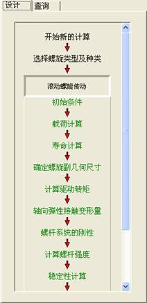
2 滚动螺旋传动设计计算
启动系统开始一个新的设计，点击导航栏中“开始新的计算”按钮，提示用户输入设计信息，如下图所示：
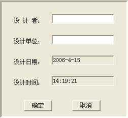
其中，设计者为设计人姓名，单位为设计者工作单位，这两个值均可缺省，缺省后系统按照空白处理，在设计结束后可在报表中手工填写，按“确定”按钮后系统提示选择待设计的螺旋传动类型，如下图所示：
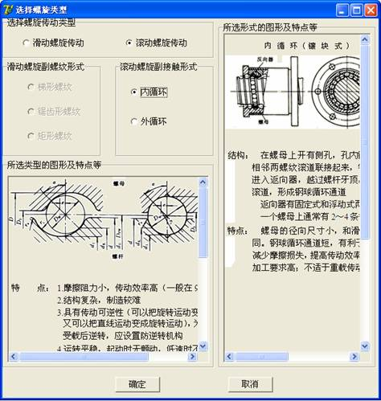
在该界面中提示了常用螺旋传动类型及设计特点，用户选择后点击“确定”按钮。
2.1初始条件输入
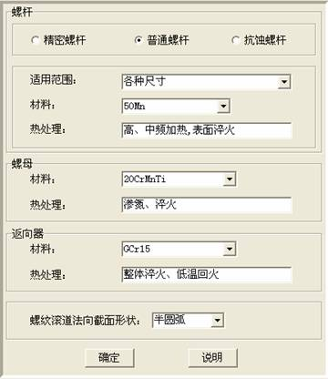
1、选择螺杆的类别，从而根据适用范围确定螺杆的材料及其热处理；
2、选定螺母的材料及其热处理；
3、返向器/挡球器的材料及其热处理已由之前所选的“螺旋副的接触形式”确定范围；
4、选择“螺纹滚道法向截面形状”；
5、“确定”：当点击确定后，进入下一个界面；
“说明”：点击说明按钮弹出网页说明该界面的简单操作。
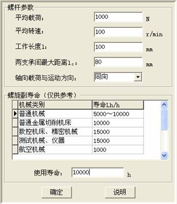
1、输入“平均载荷”、“平均转速”、“工作长度l”、“两支承间最大距离lc”、“使用寿命”的值；
2、选定“轴向载荷与运动方向”；
3、“确定”：当点击确定后，进入下一步；
“说明”：点击说明按钮弹出网页说明该界面的参数及简单操作。
2.2载荷计算
本界面选择滚动螺旋传动载荷计算的参数，如下图所示：
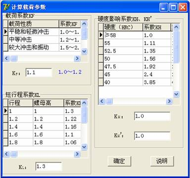
1、输入“载荷系数KF”的值；
2、选定“短行程系数KL”、“硬度影响系数KH、KH’”；
3、“确定”：当点击确定后，进入下一界面；
“说明”：点击说明按钮弹出网页说明该界面的参数及简单操作。
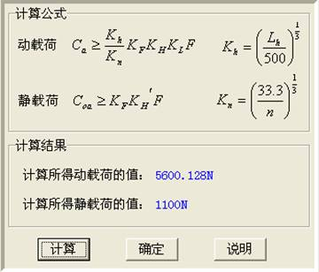
1、“计算”：当点击计算后，“确定”按钮可用；
“确定”：当点击确定后，进入下一步；
“说明”：点击说明按钮弹出网页说明该界面的简单操作。
2.3寿命计算
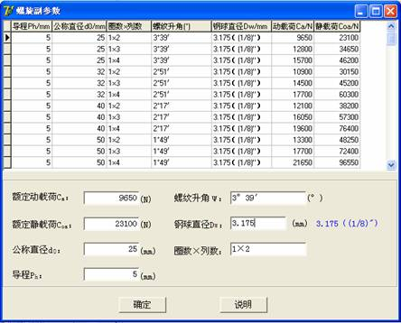
1、根据上一步计算所得的动载荷、静载荷值，点选合适的值；
2、输入“钢球直径”的值，但必须是括号前面的数据，否则弹出提示对话框，显示输入的数值不合法；
3、“确定”：当点击确定后，进入下一步；
“说明”：点击说明按钮弹出网页说明该界面的简单操作。
2.4 确定螺旋副几何尺寸
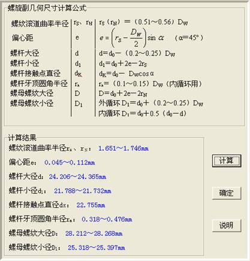
1、“计算”：当点击计算后，“确定”按钮可用；
“确定”：当点击确定后，进入下一步；
“说明”：点击说明按钮弹出网页说明该界面的简单操作。
2.5 计算驱动转距
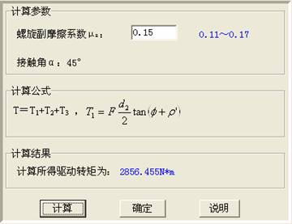
1、输入“螺旋副的摩擦系数μs”，但必须在提示范围内，否则，弹出提示对话框，显示输入的数据不合法。
2、“计算”：当点击计算后，“确定”按钮可用；
“确定”：当点击确定后，进入下一步；
“说明”：点击说明按钮弹出网页说明该界面的简单操作。
2.6 轴向弹性接触变形量
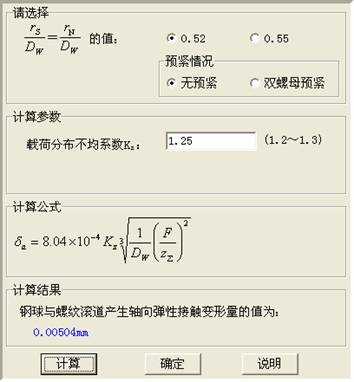
1、点选右侧的“0.52”/“0.55”及“预紧情况”为计算选择公式；
2、输入“载荷分布不均系数Kz”，但必须在提示范围内，否则，弹出提示对话框，显示输入的数据不合法。
3、“计算”：当点击计算后，“确定”按钮可用；
“确定”：当点击确定后，进入下一步；
“说明”：点击说明按钮弹出网页说明该界面的简单操作。
2.7 螺杆系统的刚性
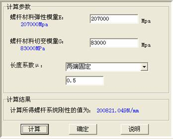
1、输入“载荷分布不均系数Kz”，但必须与提示的数值相吻合；
2、点选螺杆端部结构，从而确定“长度系数μ”的值；
3、“计算”：当点击计算后，“确定”按钮可用；
“确定”：当点击确定后，进入下一步；
“说明”：点击说明按钮弹出网页说明该界面的简单操作。
2.8计算螺杆强度
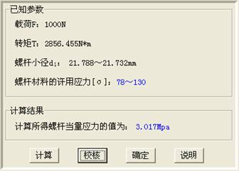
1、“计算”：当点击计算后，“校核”按钮可用；
“校核”：当点击校核后，若校核通过，则“确定”按钮可用，校核通不过，则需返回重做；
“确定”：当点击确定后，进入下一步；
“说明”：点击说明按钮弹出网页说明该界面的简单操作。
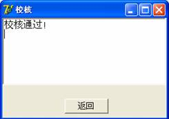 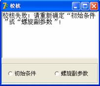
2.9 稳定性计算
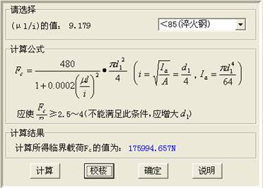
1、根据提示的(μl/i)的值，选择右侧为计算选择公式；
2、“计算”：当点击计算后，“校核”按钮可用；
“校核”：当点击校核后，若校核通过，则“确定”按钮可用，校核通不过，则需返回重做；
“确定”：当点击确定后，进入下一步；
“说明”：点击说明按钮弹出网页说明该界面的简单操作。
2.10 横向振动计算
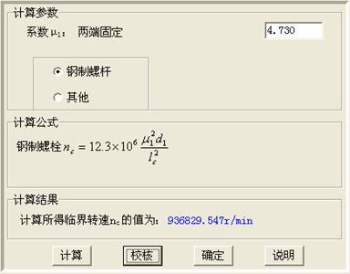
1、“系数μ1”的值已由2.7 螺杆系统的刚性 时所选择的螺杆端部结构确定
2、选择按钮为计算选择公式；
3、“计算”：当点击计算后，“校核”按钮可用；
“校核”：当点击校核后，若校核通过，则“确定”按钮可用，校核通不过，则需返回重做；
“确定”：当点击确定后，进入下一步；
“说明”：点击说明按钮弹出网页说明该界面的简单操作。
2.11 计算效率
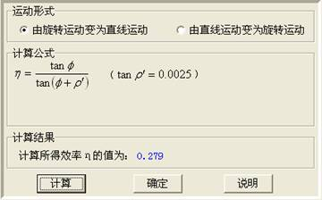
1、选择按钮为计算选择公式；
2、“计算”：当点击计算后，“确定”按钮可用；
“确定”：当点击确定后，点击左侧导航板的“结束”按钮，可显示简单报表；
“说明”：点击说明按钮弹出网页说明该界面的简单操作。